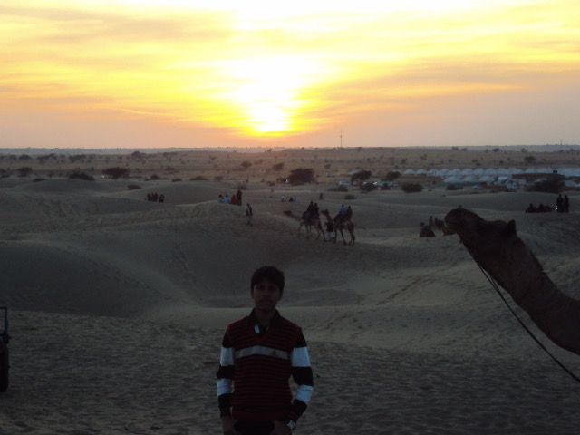

M.Tech in Computer Science and Engineering
IIT Hyderabad | 2022 - 2025
Built strong foundations in machine learning, compilers, and systems programming.
Engineer | Researcher | Life Long Learner
I am Soumya Banerjee, an engineer by profession. Powered by curiosity, caffeine, and deeply questionable sleep schedule.

About Me
I currently work as an ML Engineer at Qualcomm R&D in Bengaluru, India, where I focus on ML systems, compiler-oriented optimization, AI accelerators, and high-performance infrastructure. I enjoy solving practical engineering problems and building dependable software that balances performance, scalability, and usability. Alongside low-level systems and AI development, I like crafting polished user experiences, exploring new technologies, and writing about what I learn. Outside coding, you'll probably find me traveling, listening to music, taking photos, or wondering why a bug disappears after restarting everything twice.
Academic Details
IIT Hyderabad | 2022 - 2025
Built strong foundations in machine learning, compilers, and systems programming.
West Bengal University of Technology | 2017 - 2021
Built strong foundations in programming, data structures, algorithms, DBMS, OS, and software engineering.
M.P Birla Foundation H.S School | 2015 - 2017
Focused on Physics, Chemistry, Mathematics and Computer Science.
Tech Highlights
Working as an ML + Systems Engineer at Qualcomm, enabling PyTorch operators for open-source LLMs on the Qualcomm AI 100 accelerator while building high-performance vectorized kernels using HVX intrinsics and optimizing Multi-NSP execution pipelines for maximum throughput.
Focused on ML/DL for compilers and program analysis, including binary similarity for vulnerability detection, ML-based compiler inlining, hottest basic block prediction using CFGs, and program classification using branch prediction techniques.
Building scalable AI agentic workflows, automation pipelines, and systems tooling to improve engineering productivity, accelerate experimentation, and optimize large-scale development workflows.
Images

Hobbies & Likes
I enjoy capturing street textures, nature, and travel frames whenever I get time.
I document learnings from books, research, and experiences through short blogs.
I like crafting interfaces that feel minimal, clear, and fast to navigate.
Currently investing in books, badminton,finance lessons and chess.
Contact